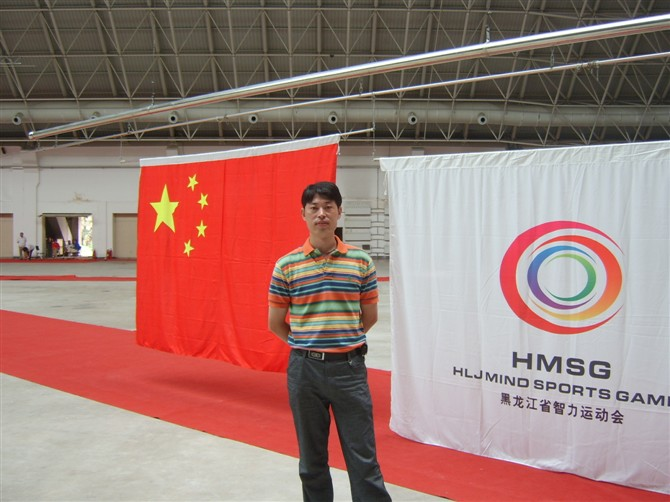

别忘了我这个小弟
别忘了我这个小弟以和为贵

2009年4月，黑龙江省五子棋公开赛，第八名；
2010年4月，黑龙江省五子棋锦标赛，第三名；
2010年5月，“妙手杯”全国五子棋团体锦标赛，团体第十二名；
2011年2月，第二届全国智运会黑龙江省五子棋选拔赛，第六名；
2011年8月，黑龙江省第二届智力运动会五子棋项目，第一名。
本人作品
运气不是一般的好――黑龙江省第二届智力运动会五子棋比赛个人棋评
相关链接
［ 以和为贵 于 2011-9-10 18:09:11 时花20金币送鲜花一朵］
［ 以和为贵 于 2011-9-10 18:09:19 时花20金币送鲜花一朵］
［ 以和为贵 于 2011-9-10 18:09:23 时花20金币送鲜花一朵］
［ 以和为贵 于 2011-9-10 18:09:27 时花20金币送鲜花一朵］
［ 以和为贵 于 2011-9-10 18:09:33 时花20金币送鲜花一朵］
［ 被感动的人 于 2011-9-10 18:25:56 时花20金币送鲜花一朵］
［ 被感动的人 于 2011-9-10 18:25:58 时花20金币送鲜花一朵］
［ 被感动的人 于 2011-9-10 18:25:59 时花20金币送鲜花一朵］
［ 被感动的人 于 2011-9-10 18:26:02 时花20金币送鲜花一朵］
［ 被感动的人 于 2011-9-10 18:26:04 时花20金币送鲜花一朵］ <
不言谢意，只是你给我评的职称太高了。
在今天这个特殊的日子里，祝天下辛勤园丁：栋梁砥邦国，桃李芳九州。
［ 被感动的人 于 2011-9-10 18:26:20 时花20金币送鲜花一朵］
［ 蓝天蓝 于 2011-9-10 18:35:54 时花20金币送鲜花一朵］
［ 掌棋宣传员 于 2011-9-11 2:02:12 时花20金币送鲜花一朵］
［ 蓝天蓝 于 2011-9-11 6:56:41 时花20金币送鲜花一朵］
［ 蓝天蓝 于 2011-9-11 6:56:53 时花20金币送鲜花一朵］
引用：要不咱们可以成为姐妹呢
原文由 被感动的人 发表于 2011-9-10 18:23:59 :
其实我下午看见讨论来着，因为正忙事情打算晚上汇总的，蓝天姐真是有心又勤快又跟我心意相通啊~
别忘了我这个小弟
［ 蓝天蓝 于 2011-9-11 6:56:27 时花20金币送鲜花一朵］
［ 蓝天蓝 于 2011-9-11 6:57:06 时花20金币送鲜花一朵］